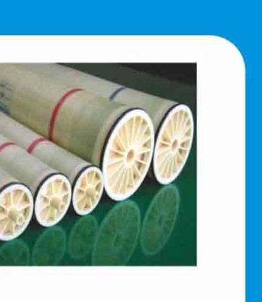
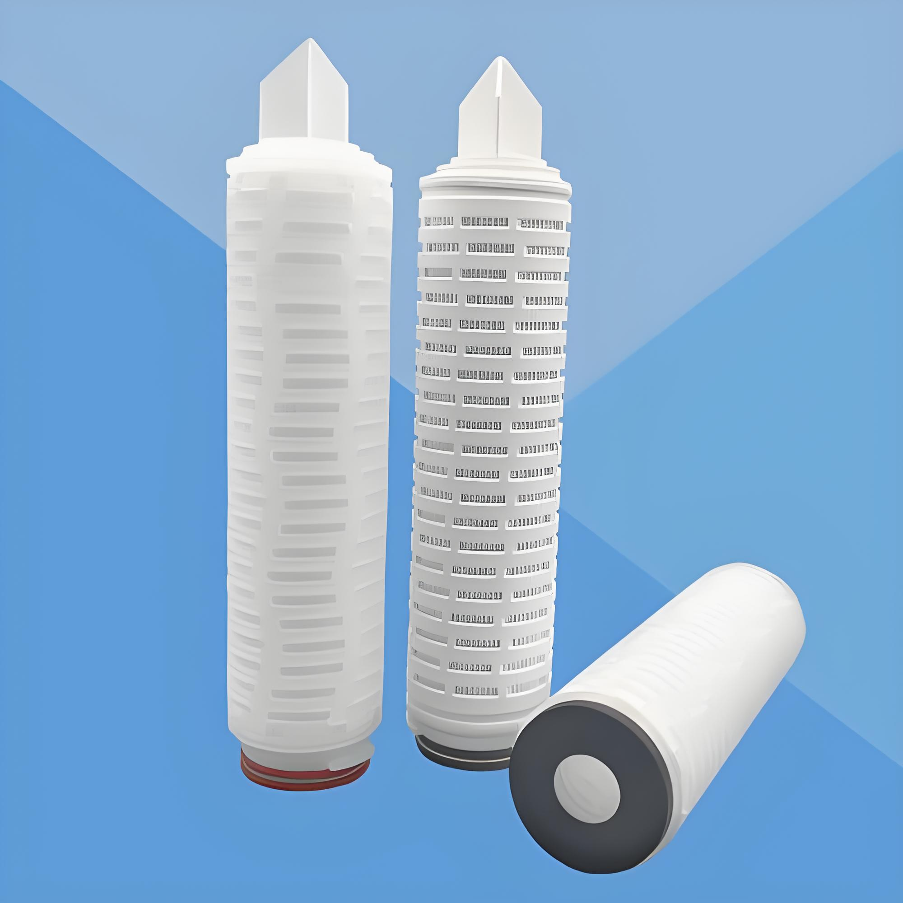
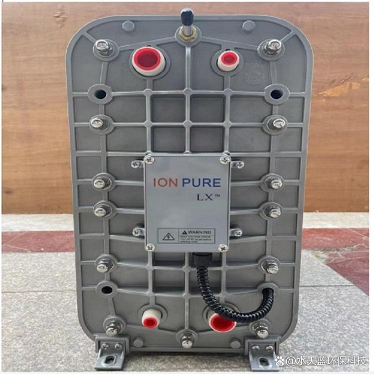
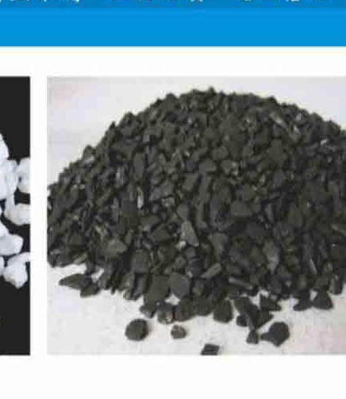

Warranty terms apply to complete equipment; consumable parts follow the replacement cycles stated on this page.
Five-Series Genuine Supply
Fits KONCHE & Mainstream Brands
GE / Dow / Hydranautics
Shenzhen Same-Day Dispatch
Replacement Ledgers
Konche supplies compatible water treatment spare parts and consumables to support the stable operation of RO, UF, ultrapure water and disinfection equipment. Proper consumables selection and timely replacement are important for consistent system performance.
KONCHEINDUSTRIAL WATER TREATMENT SYSTEMSMODEL KONCHE SP · WATER TREATMENT CONSUMABLES PROGRAMCOMPATIBILITY CHECKEDSERIAL VERIFIEDPLANNED SUPPLYENGINEERED BY KONCHE · 2026
CONSUMABLES SUPPORT
Keep systems performing.
The KONCHE spare-parts programme is a five-series genuine consumables supply for RO, pretreatment, ion-exchange and EDI systems: filter cartridges (PP, pleated, carbon and string-wound, 5–40 inch, 1–100 μm), filter media (quartz sand, activated carbon, manganese sand and anthracite), ion-exchange resins (001×7 softening and UP6250 polishing grades), EDI modules (3–10 year service life) and RO membrane elements (4040/8040, selected by model; typical RO system desalination 97–99%). Every item fits KONCHE equipment and mainstream brands including GE, DOW, Hydranautics and Rohm & Haas, with non-standard custom processing available. The same service sources pumps, UV lamps, meters and other components against a customer specification. Orders are consolidated into single shipments after pre-delivery verification, so one purchase order covers mixed consumable lines, and replacement intervals with storage guidance are supplied with each order to keep the installed system in continuous operation.
01
RO MEMBRANE ELEMENTS
The core separation component in RO.
Selection affects permeate quality, recovery performance, energy consumption and operating stability. Options are available for industrial RO, brackish water desalination and seawater desalination.
02
FILTER CARTRIDGES
Protection from pretreatment to final filtration.
PP melt blown, string wound and pleated cartridges, plus filter bags, can be selected according to filtration rating, material compatibility, flow requirement and housing size.
03
PRECISION SECURITY FILTERS
Final particle protection.
Precision security filters protect high-pressure pumps, RO membrane housings and other critical water treatment components. Regular replacement helps reduce fouling risk.
04
STAINLESS STEEL HOUSINGS
Durable platforms for cartridge filtration.
304 and 316L stainless steel options, multi-cartridge configurations for higher flow, and compact single-cartridge housings for low-flow and point-of-use applications.
SPARE PARTS SCOPE
Documented range in pictures

RO membrane elements for KONCHE reverse osmosis systems

PP, pleated, carbon and string-wound filter cartridges

EDI module stack for electrodeionization systems

Activated carbon media for pretreatment and polishing
COMPATIBILITY CHECK
Find the right replacement.
Send your equipment model, consumable specification or product photos for compatibility confirmation of RO membranes, filter cartridges or precision security filters.